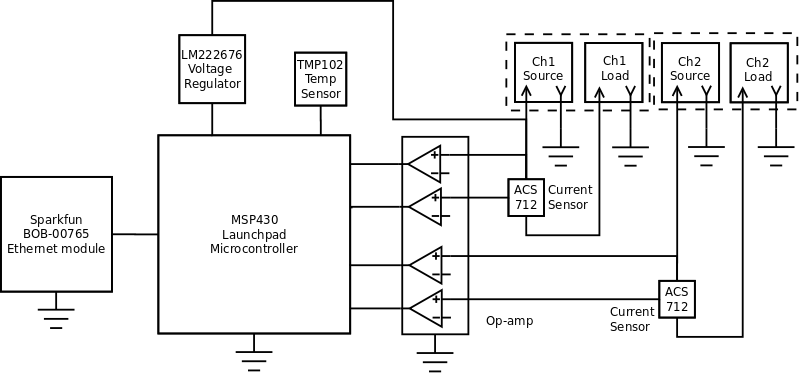
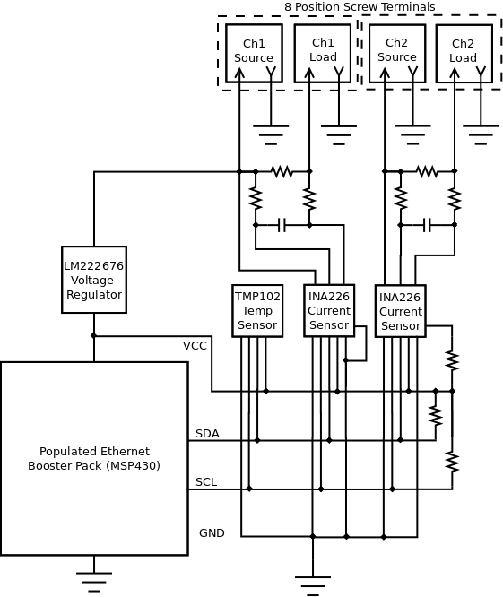

SEP Step 3: Block Diagram
Added by Aaron Harper almost 10 years ago
Version 1.0 Block Diagram

Block_Diagram1.png (43.7 kB)
{kind=link}
Block_Diagram1.png (29.4 kB)
{kind=link}
Replies (12)
RE: SEP Step 3: Block Diagram - Added by Jeremy Wright almost 10 years ago
Ah, now I think I see where the 0.1C 10-bit ADC callout in the requirements came from. It's due to your use of the TMP102.
I'm not sure if it would be an improvement or a detriment to the diagram, but you could put current symbols in both of the ACS712 blocks.
Do you want to add dashed lines around the channels in some way to show that they're a separate system(s) that's being measured?
RE: SEP Step 3: Block Diagram - Added by Aaron Harper almost 10 years ago
All fixed, though the current symbol (I) didn't work so well with the Sans font... it looked like a line. I just put the part number in it and stuck a callout "current sensor" close by. I like what the dashed line did for it.
RE: SEP Step 3: Block Diagram - Added by Aaron Harper almost 10 years ago
I found something that will keep us from having to dink with the Op-Amp and reading the analog voltages, clipping and so on. In essence, it cuts the component count by 20-40%.
TI makes an interesting little gem that measures voltage and current, derives power, and reports it all via I2C bus. Have a look: INA219.
The only gotcha is that it is not a hall sensor, thus somewhat susceptible to temp and voltage variation. I will research to see if such variation is within the spec otherwise. If it is, I will delete the requirement for a hall sensor, since this did not come from the client.
RE: SEP Step 3: Block Diagram - Added by Aaron Harper almost 10 years ago
Better still is the INA226 since it can read the load on the high or low side, and handles voltages up to 36VDC. The stability is superior to the hall sensors originally specified, so I will delete the requirement for a hall sensor in the requirements document.
We will still have to limit the voltage to the chip, as an open load solar cell can free run to 60-70VDC or even more, but this is relatively easy to do with inexpensive components. I have 3 devices coming, of which I will use 2 in the prototype, and if I don't use the last one as a spare, we can work on version 2.0 after the contract is complete.
RE: SEP Step 3: Block Diagram - Added by Aaron Harper almost 10 years ago
After a good bit of research I have decided to use the Ethernet booster pack as the base device. This simplifies the Ethernet portion of the effort, and rather than use it as a booster pack (daughter card), the design has pads and circuitry to mount the processor and support components as well, making it a slick solution. The block diagram will be updated tonight.
The bad news is that the store is out of stock, and will likely remain so for some time. Checking the forums, the trouble is not the components, but rather a lack of time and labor to build more units. This is something I can fix, and have requested the Eagle/Gerber files to the board. A copy of the forum message follows:
First of all, Thanks for your awesome work. You have just saved me a lot of time and have made the end product much more polished. I have an application that needs about 40-50, perhaps more, of these units configured as standalone systems. After reading the forums, I imagine you wouldn't be willing to assemble this many.
Since I have assembly capabilities here, would you consider either emailing me the Eagle files for the board or selling me the bare boards?
If you are wondering about my application, please refer to the project development board at https://opendesignengine.net/projects/eps-001
Best,
Aaron Harper
RE: SEP Step 3: Block Diagram - Added by Aaron Harper almost 10 years ago
Rev.1.1 block diagram with populated Ethernet Booster Pack and INA226 current sensors on a shared I2C bus with the TMP102 temperature sensor.

Block_Diagram2.png (36.8 kB)
{kind=link}
RE: SEP Step 3: Block Diagram - Added by Jeremy Wright almost 10 years ago
And that's one of the many reasons why content should be posted as open source as you do a project. That way you can't become the bottleneck if somebody needs 40 to 50 units all of a sudden. They can build it themselves, or have someone else build them, but they need the documentation to be shared openly first.
Sigh...
RE: SEP Step 3: Block Diagram - Added by Jeremy Wright almost 10 years ago
One thing that I just noticed is that we did the block diagram for the Shepard Test Stand at a much higher level. It wasn't until the preliminary design that we started specifying part numbers. I'm not sure that this block diagram really needs to change, just wanted to point that out for discussion.
RE: SEP Step 3: Block Diagram - Added by Aaron Harper almost 10 years ago
Not a big deal about the block diagram... I was on my way to full blown schematic when I posted the above diagram. Here is the new block diagram that tends to be a little more high level.
Block_Diagram.png (23.2 kB)
{kind=link}
RE: SEP Step 3: Block Diagram - Added by Aaron Harper almost 10 years ago
In other news, the gentleman who made the Ethernet enabled MSP430 board has contacted me and will send me all the files. These, while open, were not published. I will be asking him for permission to post the design on ODE as well.
RE: SEP Step 3: Block Diagram - Added by Aaron Harper almost 10 years ago
Rob, the gentleman who created the Ethernet enabled MSP430 board, has sent me the files I requested as well as all other MSP430 projects in related areas. The Eagle PCB and Schematic files of the version I was going to use are attached, but I am evaluating some of the others as well.
ethernet_7.sch (961.8 kB)
ethernet_7.brd (169.7 kB)
(1-12/12)